Item
|
Description
|
Link
|
Type
|
1
|
Capsim® Text Mode Kernel (TMK) GitHub Repository
|

|
GitHub Repository
|
2
|
Capsim® Documentation
|
|
Documentation
|
3
|
Setup Linux for C/C++ Development and Image File Support
|
|
Setup
|
4
|
Getting Started
|
|
Instructions
|
5
|
Building Capsim Text Mode Executable
|
|
Instructions
|
6
|
Running Capsim
|
|
Instructions
|
7
|
Example FSK Modulation
|
|
Instructions
|
8
|
Adding Blocks (Models) to Capsim
|
|
Instructions
|
9
|
Scripting Capsim® Using TCL
|
|
|
10
|
GitHub Repository Capsim® Digital Communication Link
|
|
GitHub Repository
|
11
|
Digital Communications Basics by Silicon DSP Corporation
|
|
Video Tutorial
|
| 12
|
Advanced Topic: Capsim® Buffer Management
|
|
Advanced Video Topic
|
Copyright (c) 1989-2007 Silicon DSP Corporation
Permission is granted to copy, distribute and/or modify this
document under the terms of the GNU Free Documentation License,
Version 1.2 or any later version published by the Free Software
Foundation; with no Invariant Sections, no Front-Cover Texts, and
no Back-Cover Texts. A copy of the license is included in the
section entitled "GNU Free Documentation License".
Documentation
- Capsim Text Mode User Guide

- Capsim Customization
- Blocks Documentation
- Example Block for Adding Blocks to Capsim (processcubed.s)
- IIPPlot Interactive Java Plotting Package
- Java Program to Draw Topologies
CapsimTMK Getting Started
In the following the UNIX prompt is '%'. Do not type it when running the commands shown. It also indicates that this a command line command in Linux
Example topologies are included in the APPLICATIONS directory.
Each application has a README file.
Make sure to Setup Linux for C/C++ Development and Image File Support (TIFF/JPEG).
Define the environment variable CAPSIM to point to the directory where CapsimTMK resides.
For example if you place CapsimTMK in the directory:
/usr/local/CapsimTMK
Then define $CAPSIM as:
%export CAPSIM=/usr/local/CapsimTMK
If you change directories to your CapsimTMK installation you can use the command:
%pwd
to get the path, then set the $CAPSIM environment variable with this path.
Building CapsimTMK
Create a working directory called WORK. Make sure it is NOT in the $CAPSIM directory.
%mkdir WORK
You can just type:
%cd
to get to your HOME directory. Double check with the command
%pwd
Make sure to change directories to the WORK directory:
%cd WORK
Double check:
%pwd
To build CapsimTMK do the following:
1-In the WORK directory type:
%bash $CAPSIM/TOOLS/precapsim.sh
A lot of things start to happen. The bash shell precapsim.sh will create a BLOCKS and SUBS directory.
It will also create the file krn_blocklib.c in the BLOCKS directory. This file has the database of all blocks.
It will also create the all important file: Makefile.
2-Ignore the error and type:
%make
An executable file named capsim will be created.
3- Type:
%./capsim -b
To verify. Then type quit to exit for now.
Running CapsimTMK
1-Capsim Interactive Mode
Type:
%./capsim -b
Create block that generates a sine wave
block sine
Create a block that prints its input to the terminal (or file):
block prfile
Now connect the two blocks:
connect sine0 prfile0
Run the simulation:
run
Next we are going to change the parameter of the prfile0 block and have it store its input into the file "sine.dat".
Type:
to prfile0
chp
sine.date
hit the carriage return to accept the defaults for the next two parameters.
Now run
run
The results are stored in the file "sine.dat"
Save the topology by typing:
store test.t
Exit Capsim by typing
quit
Check the file "sine.dat" by typing
%cat sine.dat
We can plot the result using the Java Tool IIPPlot.jar in the $CAPSIM/TOOLS directory.
Type:
%java -jar $CAPSIM/TOOLS/IIPPlot.jar sine.dat
The sine wave is plotted.
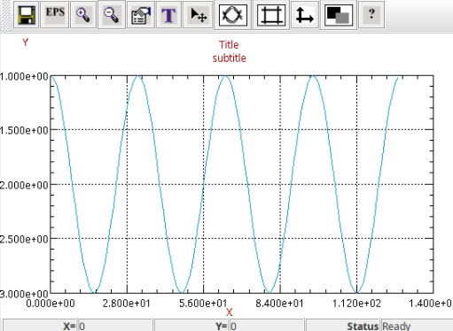
Plot of generated sine wave "sine.dat"
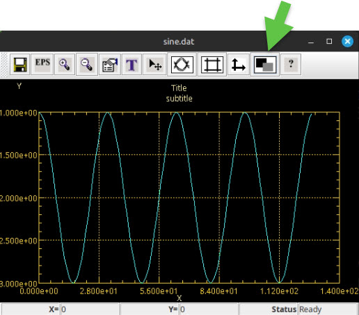
Plot of generated sine wave "sine.dat" with dark background theme
2-Simulating an FSK Modulator/Demodulator, Plotting and Topology Viewer
Copy the topologies from the FSK directory in APPLICATIONS to the WORK directory:
%cp $CAPSIM/APPLICATIONS/FSK/*.t .
The copied topologies are:
dcotest.t fskdemod.t fsk.t
Run Capsim in interactive mode:
%./capsim -b
Load the topology fsk.t:
load fsk.t
Run the simulation:
run
You will get a messages that the following files are created:
plot created file: original.tim
spectrum created file: Spectrum.tim
spectrum created file: Spectrum.fre
plot created file: demod.tim
Quit Capsim. Issue the following command to plot the original signal that is Frequency Shift Keyed Modulated:
%java -jar $CAPSIM/TOOLS/IIPPlot.jar original.tim
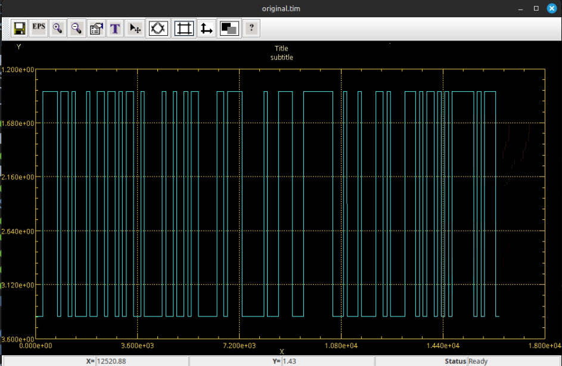
Plot of original signal to be modulated (FSK)
Note that we are using the fixed bounds capability of IIPPlot. See below:

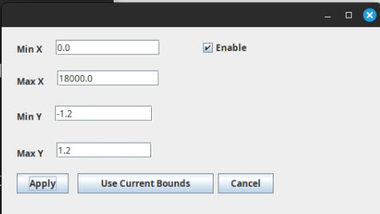
Next plot the demodulated signal where it is shown that the original is recovered:
%java -jar $CAPSIM/TOOLS/IIPPlot.jar demod.tim
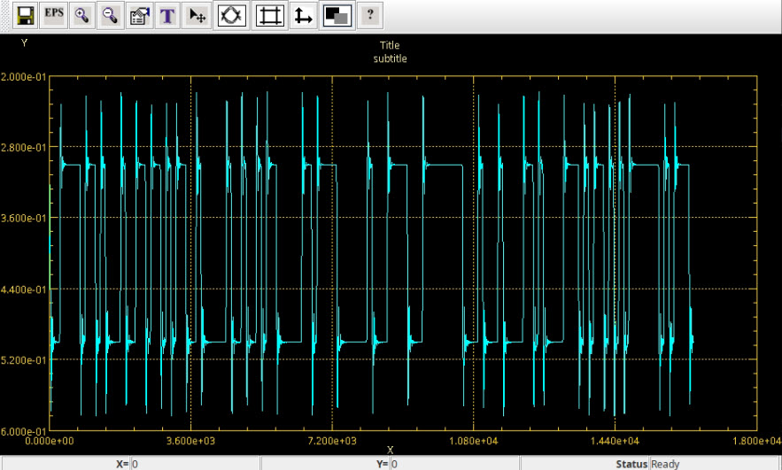
Plot of demodulated signal(FSK)
In the plot below we show the FSK signal in the time domain where we have zoomed in to highlight Frequency Shift Keying.
Use the command:
%java -jar $CAPSIM/TOOLS/IIPPlot.jar Spectrum.tim
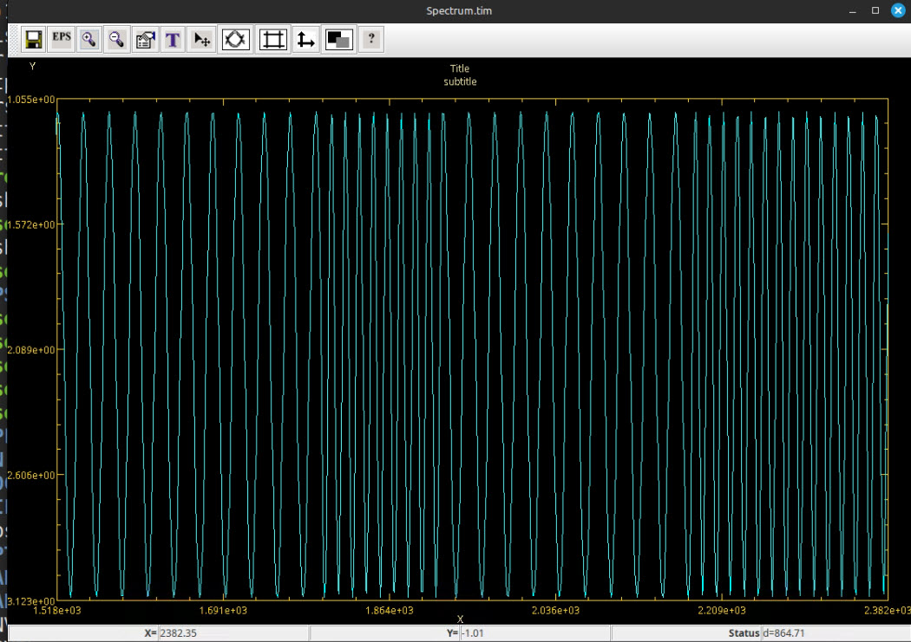
Plot of FSK signal in the time domain zoomed in.
Next we plot the Spectrum of the FSK signal:
%java -jar $CAPSIM/TOOLS/IIPPlot.jar Spectrum.fre
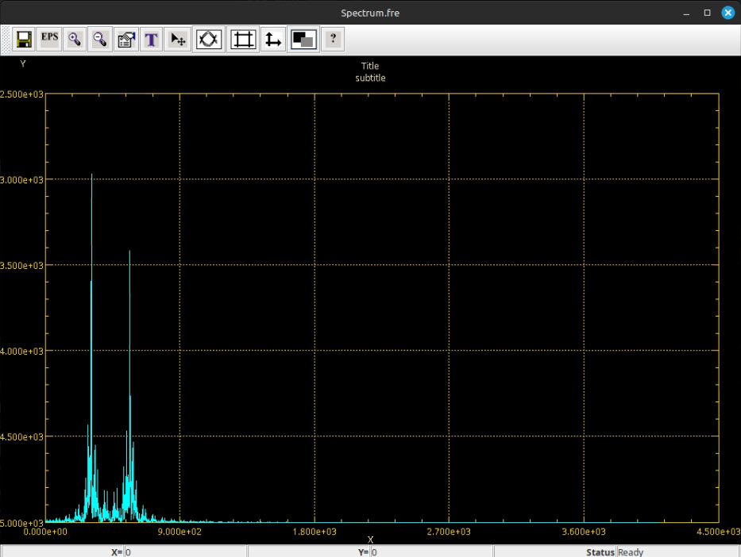
Plot of the Spectrum of the FSK signal in the frequency domain.
3-Drawing the Topology of the FSK Modulation and Demodulation Topology
We have a Java tool,DrawTopology.jar, that will draw the topology of a system or hierarchical block.
Use the following command:
%java -jar $CAPSIM/TOOLS/DrawTopology.jar fsk.t
The topology is shown below:
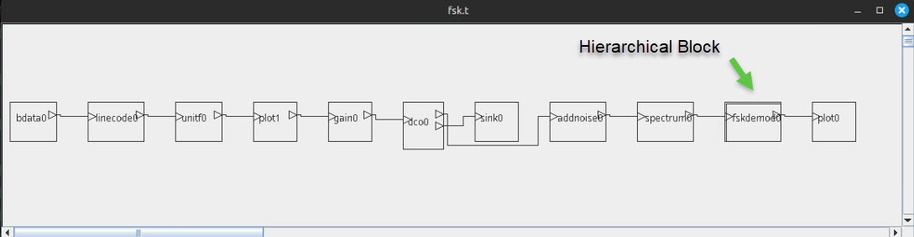
Drawing of the topology "fsk.t" using the Java tool DrawTopology
To draw the FSK demodulation hierarchical block issue the command
%java -jar $CAPSIM/TOOLS/DrawTopology.jar fskdemod.t
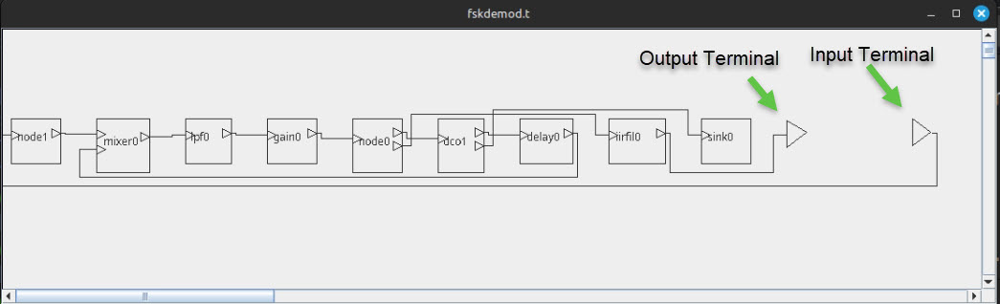
Drawing of the topology "fskdemod.t" using the Java tool DrawTopology
Adding Models (Blocks) to Capsim
CAPSIM provides the utility to add blocks(stars) to the library through the use of the
bash shell precapsim.sh. This is a separate program from CAPSIM and is
run from the UNIX/LINUX shell not from inside CAPSIM.
Another program, blockmaint.pl, is also available for library maintenance.
Suppose that CapsimTMK is installed in the following directory:
/usr/local/CapsimTMK
Then setup the environment variable CAPSIM as follows:
%export CAPSIM=/usr/local/CapsimTMK
Precapsim and Makefile
The bash shell script precapsim.sh provides all the functionality necessary
to create your own personalized version of CAPSIM.
Create a new directory any where on your system.
For example WORK. You will be creating blocks and subroutines to incorporate into Capsim in this directory.
Next make the directory you just created the current directory (VERY IMPORTANT) and execute the following:
%bash $CAPSIM/TOOLS/precapsim.sh
(ignore warning)
Followed by
%make
The precapsim.sh shell command will create all the necessary directories and copy all files including Makefiles and scripts from the $CAPSIM directory. It will also create the capsim executable in the current directory.
Following the precapsim.sh execution type:
%make
To execute capsim type:
%./capsim -b
You will be in the Capsim TMK interactive environment. Go ahead and quit.
Directory Structure
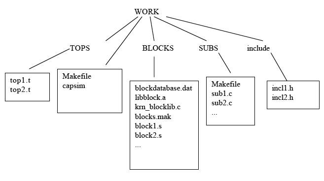
The shell command creates the directories BLOCKS, SUBS, and include.
A dummy subroutine and block(star) are also created.
A key point is that precapsim.sh also copies a Makefile into the current directory.
With this Makefile it is very easy to build capsim using your own blocks(stars) and subroutines.
All you need to do is place a block in the BLOCKS directory and, in the main directory (WORK),
type:
%make
TWICE if first time block is added.
View the Makefile to see how this happens.
The BLOCKS directory has a file called blocks.mak .
This Makefile has all the necessary dependencies to create the C code from the Block ".s" code.
It adds the block to the block database blockdatabase.dat
and creates the file krn_libblock.c and the library libblock.a
with the object files for the blocks. This is all done automatically.
The file blocks.mak itself is created by a perl script blockmake.pl in the $CAPSIM/TOOLS directory.
This perl script, given the name of the blocks or *.s, creates a make file for the blocks: blocks.mak.
For more info on the block database and block maintenance see the CapsimTMK PDF document Capsim Customization
on adding blocks.
The subroutine directory SUBS also has a Makefile and any C subroutine will be compiled and added to the libsubs.a library and linked to capsim.
The include directory is where common include files to the blocks in the BLOCKS and C code in the SUBS directory should be placed.
The Makefiles use this directory to search for include files when compiling the blocks and subroutines.
So in a nutshell it is real easy to get started. For the first time just execute
precapsim.sh followed by make. Afterwords just type make to update. Just place blocks in the BLOCKS directory and the subroutine C code in the SUBS directory.
When running make, check for errors and correct them. For block compile errors, refer to the C code. Make sure you fix the corresponding .s code.
You can use gdb and ddd to debug the block source code.
Detailed Steps in Adding Blocks to CapsimTMK
In this section we will go over detailed steps to incorporate new blocks into Capsim.
We will also show how to create new blocks using the Java Tool BlockBuilder.
We also provide the source code for an example block that we will incorporate into Capsim.
You can use this block processcubes.s at any time if you encounter any issues (creating, compiling, running).
We will also show how to generate the block using the Java Tool.
To setup CAPSIM in order to add your own blocks here is a quick guide:
Creating Blocks Using the Block Generation Tool
To create a block and add it to Capsim do the following (detailed and step by step):
Change directory to the BLOCKS directory in the WORK directory:
%cd BLOCKS
Type the following to bring up the Block Generation Graphical Tool(BlockBuilder.jar):
%java -jar $CAPSIM/TOOLS/BlockBuilder.jar
Below we show the Graphical Interface with annotations in order to create a new block.
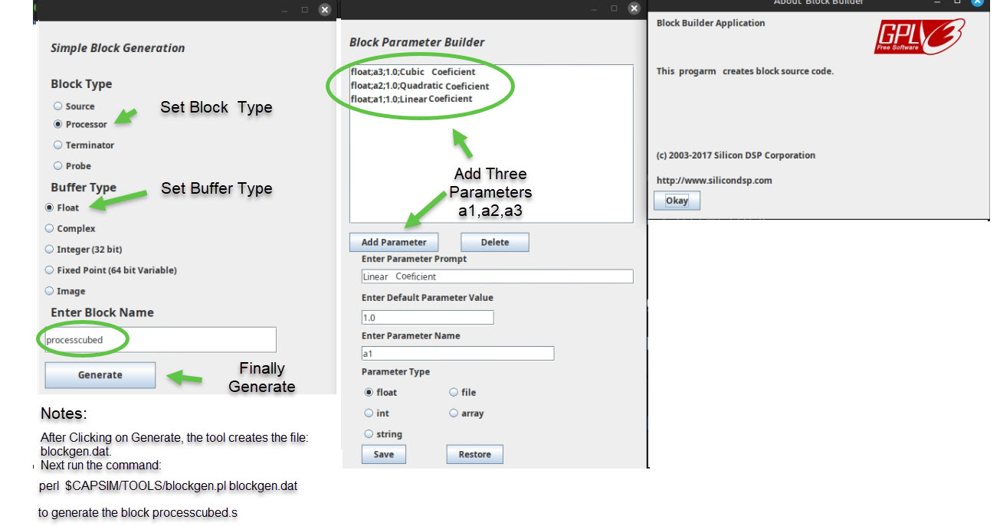
Java BlockBuilder Tool with annotations to create block processcubed.s with three parameters.
After you click on the Generate button the file:
blockgen.dat
will be created in the current directory.
The next step is to generate the new block from this data.
Issue the command:
%perl $CAPSIM/TOOLS/blockgen.pl blockgen.dat
The block processcubed.s will be created.
Type the command:
%ls -lt processescubed.s
to verify.
Next fire up your favorite text editor and make the following changes to processcubed.s:
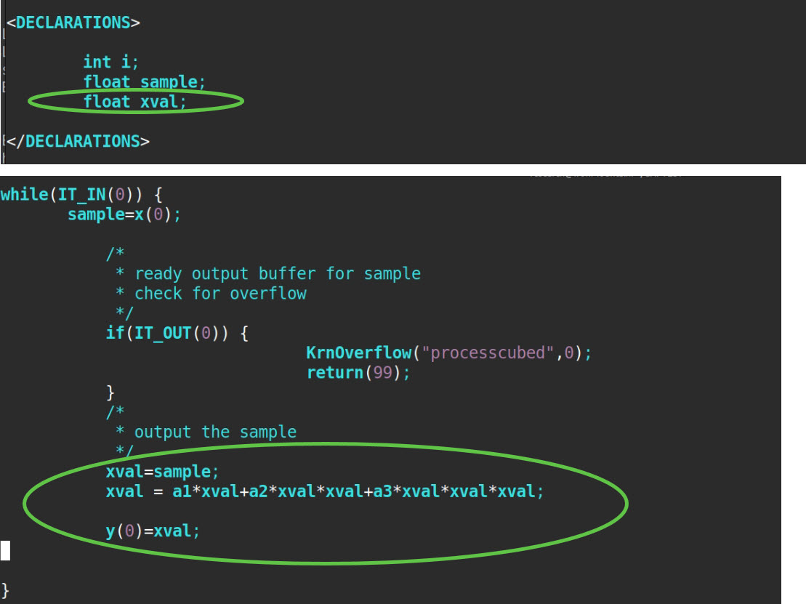
For reference the generated parameters are shown below:
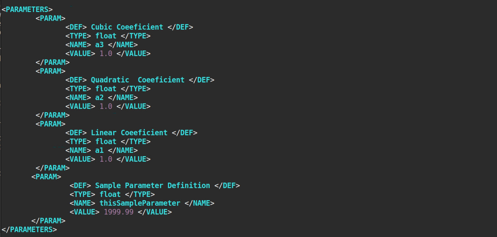
So now that we have the block, it is time to build a new capsim executable incorporating the new block.
To do this, follow the steps below:
Change directory back to WORK:
%cd ..
Type pwd to make sure you are in the WORK directory. BLOCKS is a subdirectory (where processcubed.s was created).
%pwd
Type:
%make
Type it again:
%make
You only need to type make twice the first time a block is created.
If it is modified type make only once.
Using the Created Block in Capsim
Run the newly created capsim executable in the WORK directory. Type:
%./capsim -b
In the follwing type the text in BOLD followed by Carriage Return.
We will instantiate the block. Feed it a sine wave and create the spectrum showing the
DC, second and third harmonics due to the squaring and cubing in the block processcube.s.
CapsimTMK[1]-> block processcubed
CapsimTMK[2]-> block sine
CapsimTMK[3]-> block prfile
CapsimTMK[4]-> connect sine0 processcubed0
CapsimTMK[5]-> connect processcubed0 prfile0
CapsimTMK[6]-> store testnewblock.t
CapsimTMK[7]-> run
Output From Prfile 'prfile0'
processcubed0:0
1
0.980785
0.92388
0.83147
0.707107
0.55557
0.382683
0.19509
-4.37114e-08
-0.19509
-0.382683
-0.55557
-0.707107
-0.83147
...
CapsimTMK[9]-> to prf
Current Block: prfile0 (star: prfile)
CapsimTMK[10]-> chp
Enter 3 new parameters:
0: Name of output file
param file stdout ?==> test.dat
1: Print output control (0/Off, 1/On)
param int 1 ?==>
2: Buffer type:0= Float,1= Complex, 2=Integer
param int 0 ?==>
CapsimTMK[11]->
CapsimTMK[26]-> block spectrumtxt
CapsimTMK[27]-> connect prfile0 spectrumtxt0
CapsimTMK[28]-> store
CapsimTMK[29]-> run
CapsimTMK[30]-> quit
When you run the simulation the spectrumtxt0 block will create two files:
spectrum created file: Spectrum.tim
spectrum created file: Spectrum.fre
We can now use the following command to plot the "Spectrum.fre" file:
%java -jar $CAPSIM/TOOLS/IIPPlot.jar Spectrum.fre
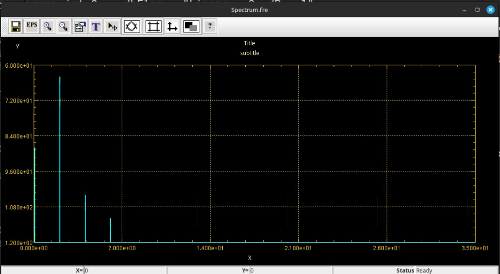
Spectrum of the output of processedcubed0 block showing DC and Harmonics.
Note that we have used the following dialog to set the plot to "bar" mode:
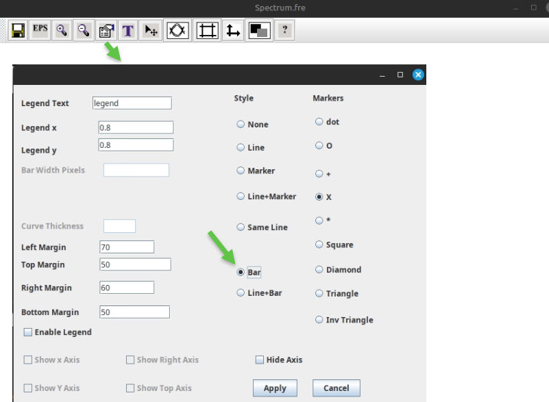
Installing C/C++ Development Tools and Libraries for Capsim Build
This document shows how to install C/C++ development Tools needed to build Capsim.
This document shows how to create a custom Capsim executable (building Capsim).
Author: Sasan Ardalan
Date: December 2018
Silicon DSP Corporation
You will need to be able to run 'sudo' in your Linux environemt.
From a terminal run the following commands:
sudo apt-get update
sudo apt-get install binutils-gold
sudo apt-get install g++ cmake
sudo apt-get install build-essential
sudo apt-get install zlib1g-dev
sudo apt-get install freeglut3-dev
sudo apt-get install glew1.5-dev libglm-dev
sudo apt-get install libtiff-dev
sudo apt-get install zlib1g-dev
sudo apt-get install lzma